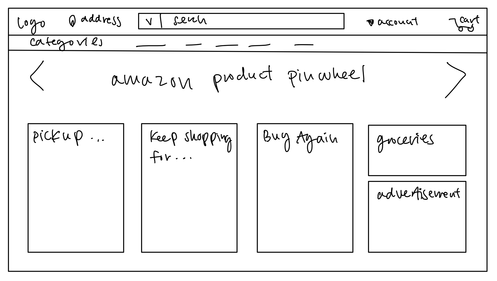
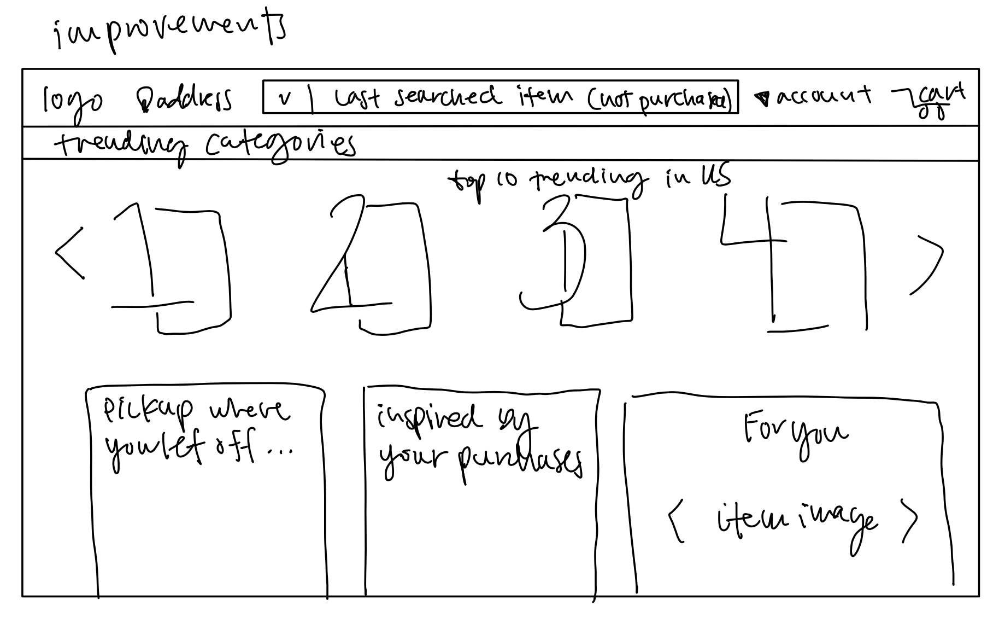

-
Using the favorite website you chose in homework 1, create a wireframe for one page of it using pen/paper, PowerPoint, or any your tool of choice. (use the 'img' tag!) Make sure to let us know what the name of your website is (Use the 'p' tag!)
Amazon Prime
 -
Try to improve the website you've chosen, and create a redesigned wireframe of one page for the same website using the principles of visual hierarchy that you learned from the article.

-
What is the goal of the website? Who is it intended for? How does the design accomplish this? Write 2-3 sentences answering these questions. (Use the 'p' tag again!)
The goal of Amazon Prime's page is to maximize sales. It's intended for any individual subscribed to Prime already. The design accomplishes this goal by highlighting sections that have suggested products. Furthermore, there is a "keep shopping" section that encourages people to continue where they left off.
-
Write 2-3 sentences about what problems your redesign addressed, and how it solved them.
The main problems with the current landing page of Amazon prime are that it lacks some personalization with the current pinwheel it uses and it also doesnt utilize its search and category bars well. My design revamps the search bar to prompt the user with a nudge to a product they previously looked at. Furthermore, trending categories replace the basic categories. The pinwheel is also now the top ten trending products in the US instead of random Amazon products that may not actually prompt the user to make a purchase.
NOTE: Make sure to include the wireframe images in the website and don't just put it in your assets folder!
Your wireframes should look something like this: